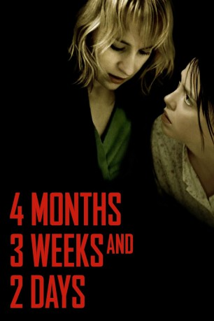

IMDB-Wertung: 7.9 / 10
IMDB-Wertung: 7.9 / 10  Metascore:
Metascore: 
Die Studentinnen Gabita und Otilia, zwei junge Rumäninnen, leben unter dem rumänischen Ceausescu-Regime, als Gabita schwanger wird und abtreiben will. Verstörendes Zeitdokument nicht allzu ferner Geschichte.
Alternativ: 4 Months, 3 Weeks and 2 Days (Englischer Titel)
 IMDB-Wertung: 7.9 / 10 Metascore:
Die Studentinnen Gabita und Otilia, zwei junge Rumäninnen, leben unter dem rumänischen Ceausescu-Regime, als Gabita schwanger wird und abtreiben will. Verstörendes Zeitdokument nicht allzu ferner Geschichte.
Jahr: 2007
Dauer: 108 Minuten
FSK: 16
Land: Rumänien Studio: Concorde FilmverleihTonspuren: DD5.1 - ,
Untertitel: Deutsch,
Auflösung: 720p (1280x720) Größe: 4188 MB
Genre: Drama
Regisseur: Cristian Mungiu
Drehbuch: Cristian Mungiu
Soundtrack:
Darsteller:
 Anamaria Marinca als Otilia
Anamaria Marinca als Otilia Vlad Ivanov als Viarel 'Domnu' Bebe
Vlad Ivanov als Viarel 'Domnu' Bebe Luminita Gheorghiu als Gina Radu - Adi's mother
Luminita Gheorghiu als Gina Radu - Adi's motherDatei: X:\2017(A-F)\4 Monate, 3 Wochen und 2 Tage (2007, FSK16, 1280x720).mkv seit 15.11.2017
Festplatte: HD 2017(A-Z)-2018(A-F)
 Es gibt insgesamt 152 Filme in der Gruppe '2017(A-F)'
Es gibt insgesamt 152 Filme in der Gruppe '2017(A-F)'